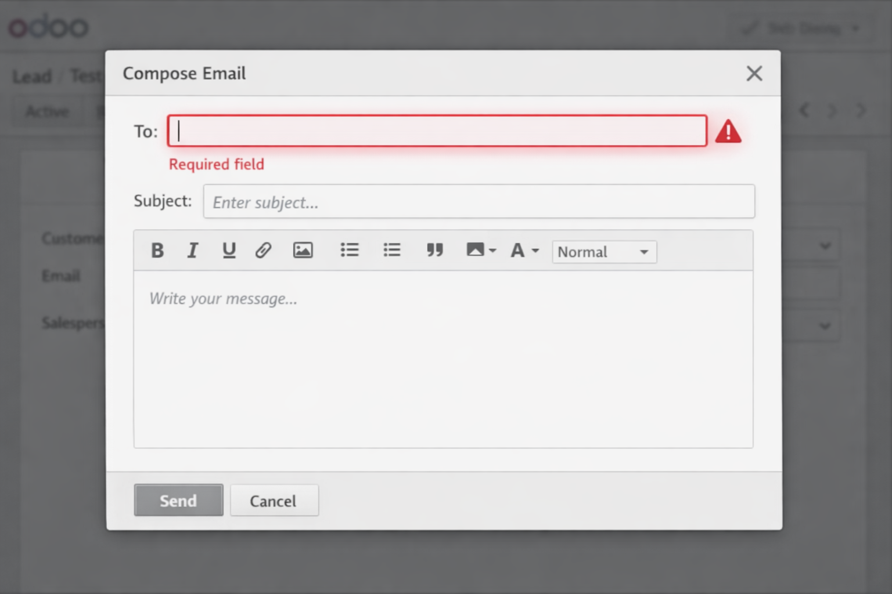
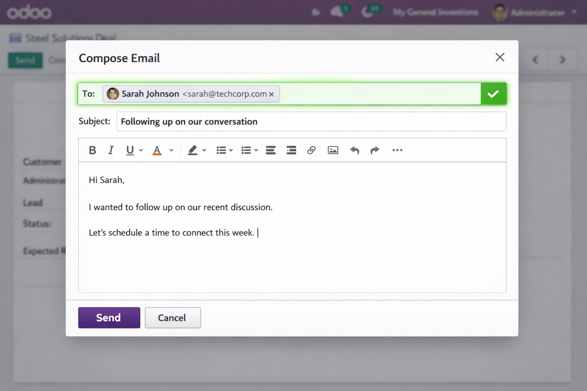

In Odoo Community, the mail composer doesn't pre-fill the lead's contact as a recipient. The "To" field is empty. You have to manually search for the contact, add them as a follower, and then try again. On every single lead.
If your team sends more than a handful of emails per day, this adds up fast. It's not a bug — it's how Odoo Community works by default. But it doesn't have to stay that way.
Open lead ➔ Click Send ➔ Empty "To" field ➔ Search contact ➔ Add as follower ➔ Reopen composer ➔ Finally send
Open lead ➔ Click Send ➔ Contact already filled in ➔ Write your message ➔ Send

Before: Empty recipient field

After: Contact pre-filled automatically
The module overrides the mail composer for CRM leads. When you open the email composer from a lead, it automatically resolves the contact partner and fills them in as the recipient. No settings to configure, no buttons to click, no workflows to change.
For non-CRM models, everything works exactly as before. One Python file. No new menus, no new models, no database changes.
✓ Works with any mail composer action on CRM leadsWe switched to Odoo Community for our CRM. First thing we tried: open a lead, click Send Email. The contact wasn't there. We had to add them as a follower first — on every single lead. So we wrote this fix. It took us a day. It saves us time every day since.
This is a basic workflow fix that every Odoo Community CRM user needs. We think it should be free.
— Balane Tech Team
CRM Direct Email fixes the basics. If your team needs multi-step email sequences, sender management, and per-lead tracking — CRM Outreach Campaigns builds on top of this module.
Response within 48 business hours.
This module requires access to custom addons and is not compatible with Odoo Online (SaaS).
Tested on a standard Odoo 18 system with its declared dependencies (crm, mail). We recommend installing on a staging database first, verifying everything works, and then deploying to production.
Covered: Installs and runs on fresh Odoo 18 with declared dependencies (crm, mail). No known security vulnerabilities.
Not covered: Compatibility with third-party or OCA modules. Customer-specific customizations. Server infrastructure or database administration.